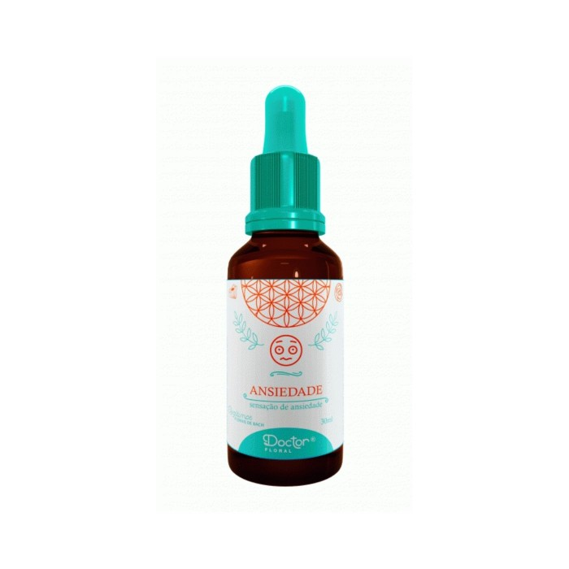

Floral Ansiedade 30ml Dr Floral
Os princípios ativos desta composição buscam fortalecer na alma as energias de tolerância, serenidade, paciência e tranquilidade, reequilibrando desta maneira o bem-estar.
Modo de uso:
Via oral - 4 gotas, 3 vezes ao dia. O uso pode ser sublingual ou diluído em água, se preferir, para atenuar o gosto. Se possível, tente mantê-lo na boca por alguns segundos antes de engolir.
Caso deseje combinar tratamentos, você pode tomar até 4 florais simultâneos, que devem ser consumidos com intervalo de 5 minutos entre um e outro.